Haystack analysis
James Ashmore
08 October, 2020
Last updated: 2020-10-08
Checks: 6 1
Knit directory: LPMP_LHF_C/
This reproducible R Markdown analysis was created with workflowr (version 1.6.2). The Checks tab describes the reproducibility checks that were applied when the results were created. The Past versions tab lists the development history.
The R Markdown is untracked by Git. To know which version of the R Markdown file created these results, you’ll want to first commit it to the Git repo. If you’re still working on the analysis, you can ignore this warning. When you’re finished, you can run wflow_publish to commit the R Markdown file and build the HTML.
Great job! The global environment was empty. Objects defined in the global environment can affect the analysis in your R Markdown file in unknown ways. For reproduciblity it’s best to always run the code in an empty environment.
The command set.seed(52694887) was run prior to running the code in the R Markdown file. Setting a seed ensures that any results that rely on randomness, e.g. subsampling or permutations, are reproducible.
Great job! Recording the operating system, R version, and package versions is critical for reproducibility.
Nice! There were no cached chunks for this analysis, so you can be confident that you successfully produced the results during this run.
Great job! Using relative paths to the files within your workflowr project makes it easier to run your code on other machines.
Great! You are using Git for version control. Tracking code development and connecting the code version to the results is critical for reproducibility.
The results in this page were generated with repository version 2724555. See the Past versions tab to see a history of the changes made to the R Markdown and HTML files.
Note that you need to be careful to ensure that all relevant files for the analysis have been committed to Git prior to generating the results (you can use wflow_publish or wflow_git_commit). workflowr only checks the R Markdown file, but you know if there are other scripts or data files that it depends on. Below is the status of the Git repository when the results were generated:
Ignored files:
Ignored: .DS_Store
Ignored: .Rhistory
Ignored: .Rproj.user/
Untracked files:
Untracked: _workflowr.R
Untracked: _workflowr.sh
Untracked: analysis/01-quality-control.Rmd
Untracked: analysis/02-normalization.Rmd
Untracked: analysis/03-feature-selection.Rmd
Untracked: analysis/04-reduced-dimensions.Rmd
Untracked: analysis/05-clustering.Rmd
Untracked: analysis/06-doublet-detection.Rmd
Untracked: analysis/07-cell-cycle.Rmd
Untracked: analysis/08-marker-detection.Rmd
Untracked: analysis/09-cell-annotation.Rmd
Untracked: analysis/10-atlas-integration.Rmd
Untracked: analysis/11-atlas-neighbors.Rmd
Untracked: analysis/12-atlas-trajectory.Rmd
Untracked: analysis/13-atlas-clustering.Rmd
Untracked: analysis/14-atlas-markers.Rmd
Untracked: analysis/15-scenic-analysis.Rmd
Untracked: analysis/16-geneset-activity.Rmd
Untracked: analysis/17-haystack-analysis.Rmd
Untracked: analysis/Untitled.Rmd
Untracked: analysis/cache/
Untracked: code/EmbryoColourPalette.R
Untracked: code/coolmap.R
Untracked: code/reorder_within.R
Untracked: data/cell-lineage.csv
Untracked: data/gene-sets.csv
Untracked: data/hello.txt
Untracked: data/pyscenic-activity.csv
Untracked: data/pyscenic-modules.csv
Untracked: data/pyscenic-regulons.csv
Untracked: data/salmon-quant.rds
Untracked: output/01-quality-control.rds
Untracked: output/02-normalization.rds
Untracked: output/03-feature-selection.rds
Untracked: output/04-reduced-dimensions.rds
Untracked: output/05-clustering.rds
Untracked: output/06-doublet-detection.rds
Untracked: output/07-cell-cycle.rds
Untracked: output/08-marker-detection.rds
Untracked: output/09-cell-annotation.rds
Untracked: output/10-atlas-integration.rds
Untracked: output/11-atlas-neighbors.rds
Untracked: output/12-atlas-trajectory.rds
Untracked: output/13-atlas-clustering.rds
Untracked: output/14-atlas-markers.rds
Unstaged changes:
Modified: _workflowr.yml
Modified: analysis/_site.yml
Modified: analysis/about.Rmd
Modified: analysis/index.Rmd
Modified: analysis/license.Rmd
Note that any generated files, e.g. HTML, png, CSS, etc., are not included in this status report because it is ok for generated content to have uncommitted changes.
There are no past versions. Publish this analysis with wflow_publish() to start tracking its development.
Motivation
Excerpt from the abstract of the singleCellHaystack preprint:
“A common analysis of single-cell sequencing data includes dimensionality reduction using t-SNE or UMAP, clustering of cells, and identifying differentially expressed genes. How cell clusters are defined has important consequences in the interpretation of results and downstream analyses, but is often not straightforward. To address this difficulty, we present a new approach called singleCellHaystack that enables the identification of differentially expressed genes (DEGs) without relying on explicit clustering of cells. Our method uses Kullback-Leibler Divergence to find genes that are expressed in subsets of cells that are non-randomly positioned in a multi-dimensional space.”
Setup
Setup chunk options:
knitr::opts_chunk$set(
autodep = TRUE,
cache = TRUE,
cache.path = "cache/17-haystack-analysis.Rmd/",
dev = "png",
error = FALSE,
message = FALSE,
warning = FALSE
)Load Bioconductor packages
library(scater)
library(MouseGastrulationData)Load CRAN packages:
library(ggthemes)
library(patchwork)
library(singleCellHaystack)Read SingleCellExperiment object:
sce <- readRDS("output/11-atlas-neighbors.rds")Make feature names unique:
rownames(sce) <- uniquifyFeatureNames(rowData(sce)$gene_id, rowData(sce)$gene_name)Rename reduced dimensions:
reducedDimNames(sce) <- c("MNN", "TSNE", "UMAP")Define annotation labels for visualisation:
source.labels <- c("reference" = "Mouse Embryo Atlas", "test" = "Mouse LPMP LHF")Haystack
Find genes that are expressed in subsets of cells that are non-randomly positioned in reduced dimensions.
MNN
Plot MNN of cells coloured by source data:
ggcells(sce, aes(MNN.1, MNN.2, colour = source)) +
geom_point() +
scale_colour_tableau(name = "Source", labels = source.labels, palette = "Tableau 10") +
labs(x = "MNN 1", y = "MNN 2") +
theme_bw() + theme(aspect.ratio = 1)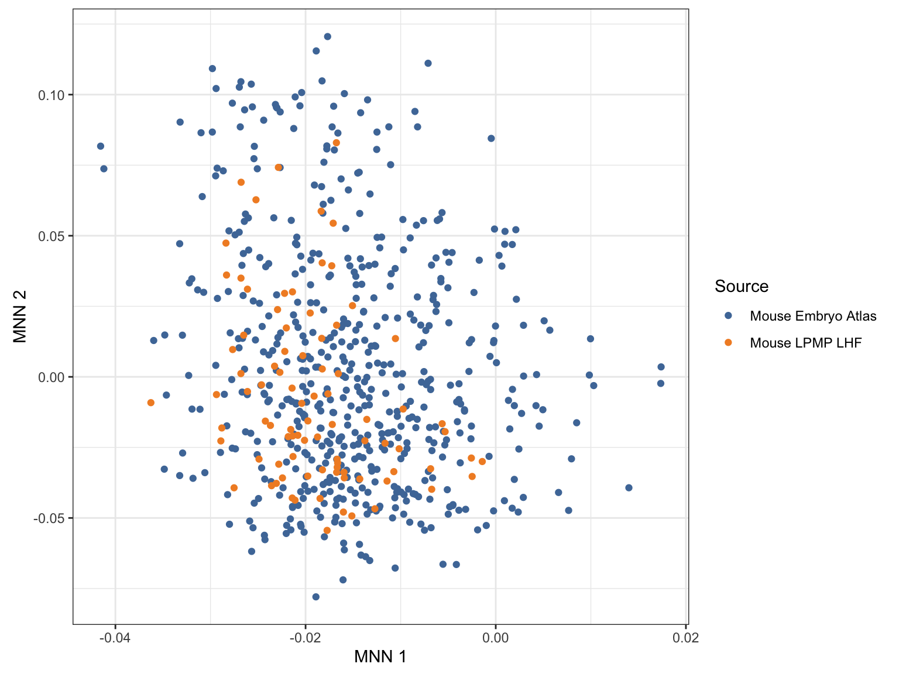
Plot MNN of cells coloured by embryonic stage:
ggcells(sce, aes(MNN.1, MNN.2, colour = stage)) +
geom_point() +
scale_colour_tableau(name = "Stage", palette = "Tableau 10") +
labs(x = "MNN 1", y = "MNN 2") +
facet_wrap(~ source, labeller = labeller(source = source.labels)) +
theme_bw() + theme(aspect.ratio = 1)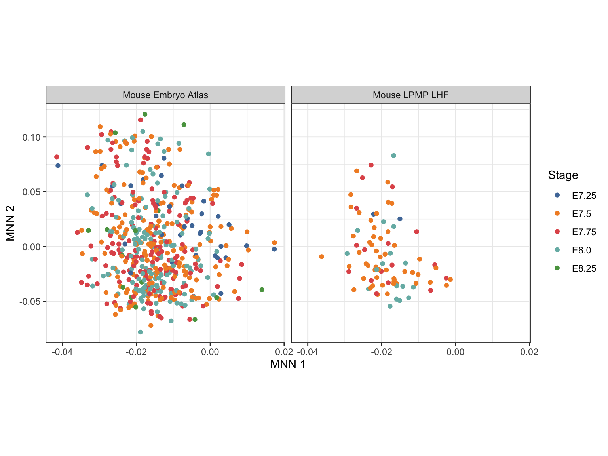
Plot MNN of cells coloured by celltype annotation:
ggcells(sce, aes(MNN.1, MNN.2, colour = celltype)) +
geom_point() +
scale_colour_manual(name = "Celltype", values = EmbryoCelltypeColours) +
labs(x = "MNN 1", y = "MNN 2") +
facet_wrap(~ source, labeller = labeller(source = source.labels)) +
theme_bw() + theme(aspect.ratio = 1)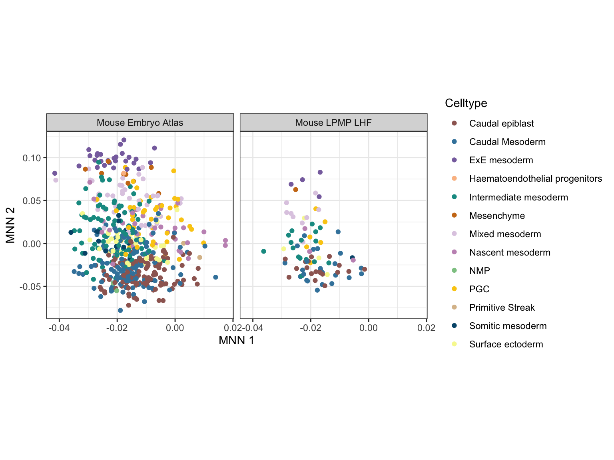
Run the main haystack function:
set.seed(681386886)
res <- haystack(
x = reducedDim(sce, "MNN"),
detection = counts(sce) > 0,
grid.points = 100,
method = "highD")Get results of the haystack analysis:
tab <- show_result_haystack(res.haystack = res)
tab <- tab[order(tab$log.p.adj, decreasing = FALSE), ] # order by decreasing significance
tab <- subset(tab, log.p.adj < log10(0.05)) # filter non-significant resultsPrint table of haystack analysis results:
Check for significant genes before plotting:
run <- ifelse(nrow(tab) > 0, TRUE, FALSE)Visualize the expression of significant genes:
ids <- rownames(tab)
top <- head(ids, n = 20)
plt <- lapply(top, function(i) {
x <- makePerCellDF(sce, features = i, exprs_values = "reconstructed")
x$exprs <- log10(x[[i]])
ggplot(x, aes(MNN.1, MNN.2, colour = exprs)) +
geom_point(show.legend = FALSE) +
scale_color_viridis_c() +
labs(x = "PC1", y = "PC2", title = i) +
theme_bw() +
theme(aspect.ratio = 1, legend.title = element_blank())
})
wrap_plots(plt, ncol = 4)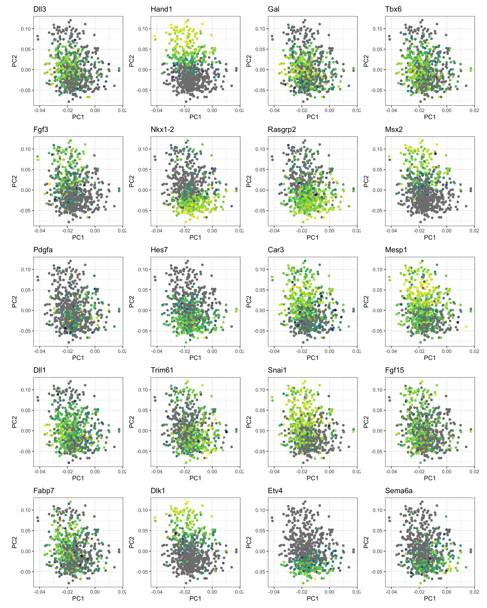
TSNE
Plot TSNE of cells coloured by source data:
ggcells(sce, aes(TSNE.1, TSNE.2, colour = source)) +
geom_point() +
scale_colour_tableau(name = "Source", labels = source.labels, palette = "Tableau 10") +
labs(x = "TSNE 1", y = "TSNE 2") +
theme_bw() + theme(aspect.ratio = 1)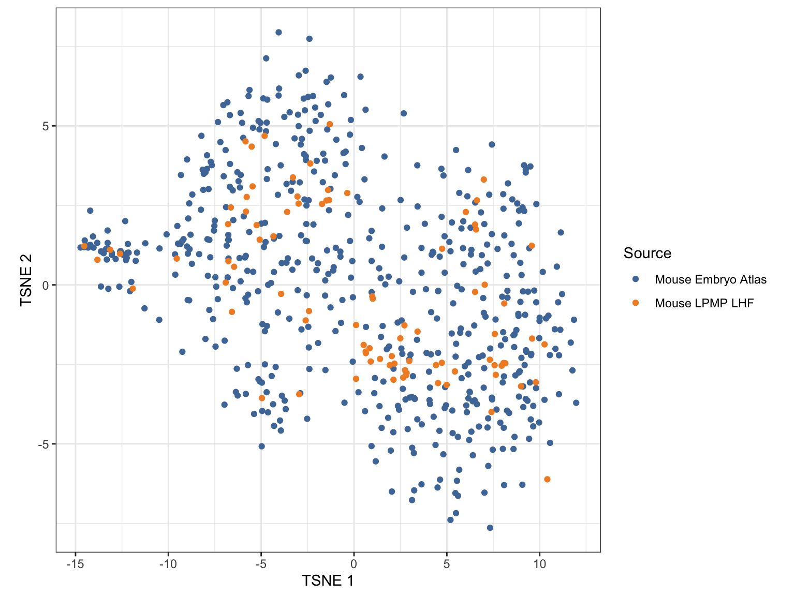
Plot TSNE of cells coloured by embryonic stage:
ggcells(sce, aes(TSNE.1, TSNE.2, colour = stage)) +
geom_point() +
scale_colour_tableau(name = "Stage", palette = "Tableau 10") +
labs(x = "TSNE 1", y = "TSNE 2") +
facet_wrap(~ source, labeller = labeller(source = source.labels)) +
theme_bw() + theme(aspect.ratio = 1)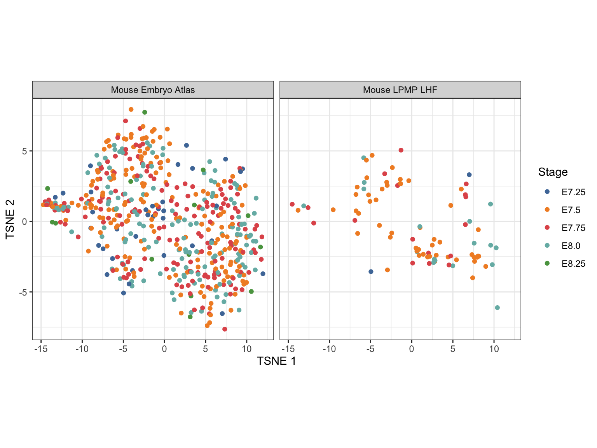
Plot TSNE of cells coloured by celltype annotation:
ggcells(sce, aes(TSNE.1, TSNE.2, colour = celltype)) +
geom_point() +
scale_colour_manual(name = "Celltype", values = EmbryoCelltypeColours) +
labs(x = "TSNE 1", y = "TSNE 2") +
facet_wrap(~ source, labeller = labeller(source = source.labels)) +
theme_bw() + theme(aspect.ratio = 1)
Run the main haystack function:
set.seed(681386886)
res <- haystack(
x = reducedDim(sce, "TSNE"),
detection = counts(sce) > 0,
grid.points = 100,
method = "2D")Get results of the haystack analysis:
tab <- show_result_haystack(res.haystack = res)
tab <- tab[order(tab$log.p.adj, decreasing = FALSE), ] # order by decreasing significance
tab <- subset(tab, log.p.adj < log10(0.05)) # filter non-significant resultsPrint table of haystack analysis results:
Check for significant genes before plotting:
run <- ifelse(nrow(tab) > 0, TRUE, FALSE)Visualize the expression of significant genes:
ids <- rownames(tab)
top <- head(ids, n = 20)
plt <- lapply(top, function(i) {
x <- makePerCellDF(sce, features = i, exprs_values = "reconstructed")
x$exprs <- log10(x[[i]])
ggplot(x, aes(TSNE.1, TSNE.2, colour = exprs)) +
geom_point(show.legend = FALSE) +
scale_color_viridis_c() +
labs(x = "TSNE 1", y = "TSNE 2", title = i) +
theme_bw() +
theme(aspect.ratio = 1, legend.title = element_blank())
})
wrap_plots(plt, ncol = 4)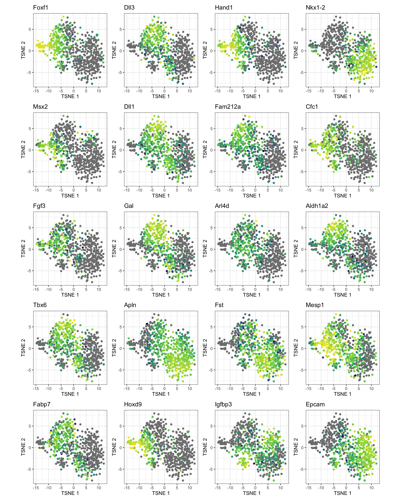
UMAP
Plot UMAP of cells coloured by source data:
ggcells(sce, aes(UMAP.1, UMAP.2, colour = source)) +
geom_point() +
scale_colour_tableau(name = "Source", labels = source.labels, palette = "Tableau 10") +
labs(x = "UMAP 1", y = "UMAP 2") +
theme_bw() + theme(aspect.ratio = 1)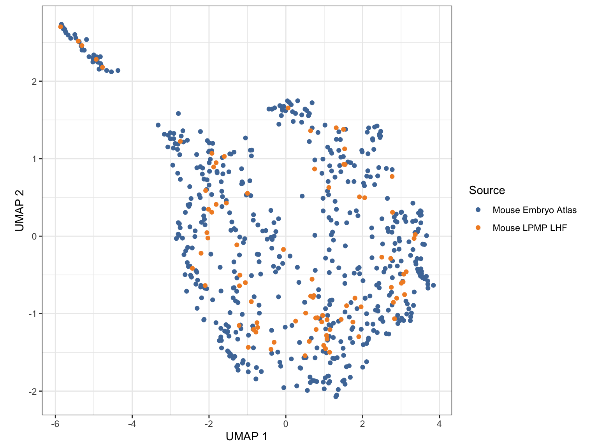
Plot UMAP of cells coloured by embryonic stage:
ggcells(sce, aes(UMAP.1, UMAP.2, colour = stage)) +
geom_point() +
scale_colour_tableau(name = "Stage", palette = "Tableau 10") +
labs(x = "UMAP 1", y = "UMAP 2") +
facet_wrap(~ source, labeller = labeller(source = source.labels)) +
theme_bw() + theme(aspect.ratio = 1)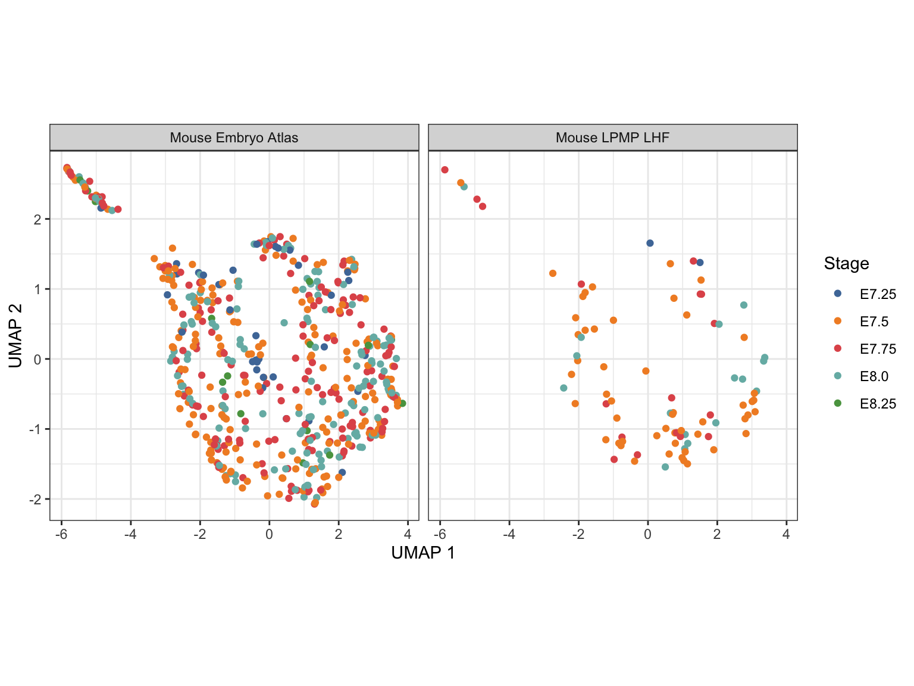
Plot UMAP of cells coloured by celltype annotation:
ggcells(sce, aes(UMAP.1, UMAP.2, colour = celltype)) +
geom_point() +
scale_colour_manual(name = "Celltype", values = EmbryoCelltypeColours) +
labs(x = "UMAP 1", y = "UMAP 2") +
facet_wrap(~ source, labeller = labeller(source = source.labels)) +
theme_bw() + theme(aspect.ratio = 1)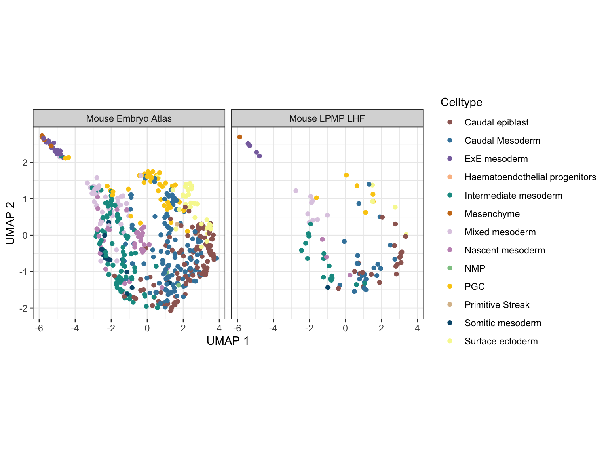
Run the main haystack function:
set.seed(681386886)
res <- haystack(
x = reducedDim(sce, "UMAP"),
detection = counts(sce) > 0,
grid.points = 100,
method = "2D")Get results of the haystack analysis:
tab <- show_result_haystack(res.haystack = res)
tab <- tab[order(tab$log.p.adj, decreasing = FALSE), ] # order by decreasing significance
tab <- subset(tab, log.p.adj < log10(0.05)) # filter non-significant resultsPrint table of haystack analysis results:
Check for significant genes before plotting:
run <- ifelse(nrow(tab) > 0, TRUE, FALSE)Visualize the expression of significant genes:
ids <- rownames(tab)
top <- head(ids, n = 20)
plt <- lapply(top, function(i) {
x <- makePerCellDF(sce, features = i, exprs_values = "reconstructed")
x$exprs <- log10(x[[i]])
ggplot(x, aes(UMAP.1, UMAP.2, colour = exprs)) +
geom_point(show.legend = FALSE) +
scale_color_viridis_c() +
labs(x = "UMAP 1", y = "UMAP 2", title = i) +
theme_bw() +
theme(aspect.ratio = 1, legend.title = element_blank())
})
wrap_plots(plt, ncol = 4)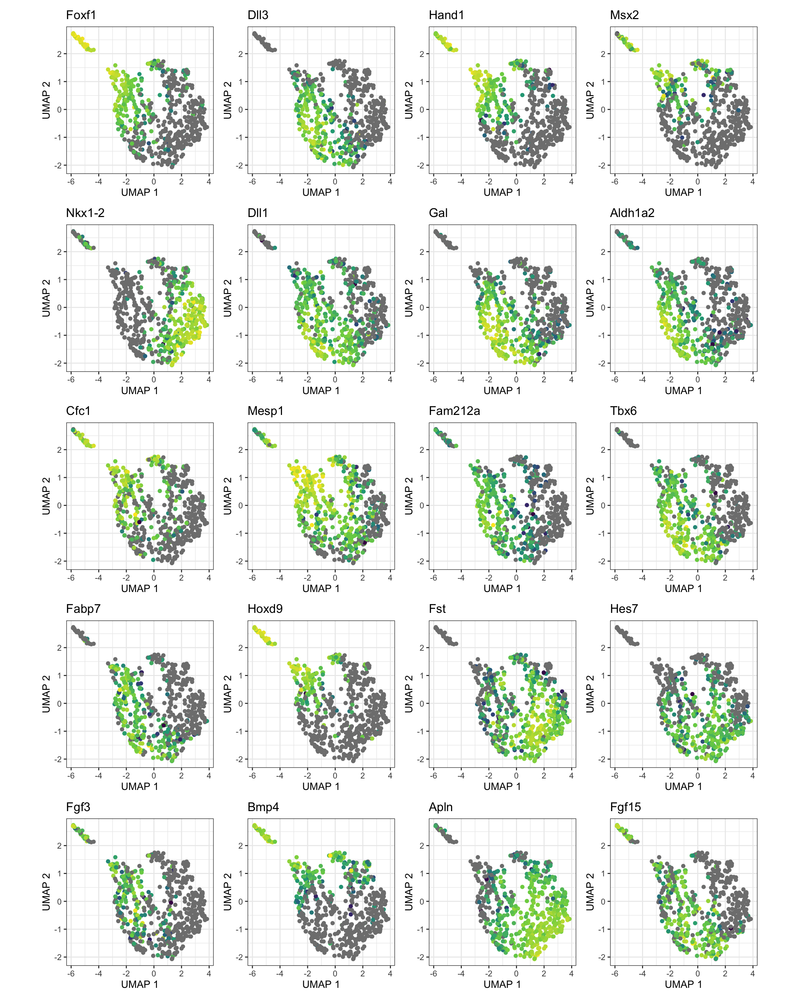
Summary
Session
Print session information:
sessionInfo()R version 4.0.2 (2020-06-22)
Platform: x86_64-apple-darwin17.0 (64-bit)
Running under: macOS Catalina 10.15.6
Matrix products: default
BLAS: /Library/Frameworks/R.framework/Versions/4.0/Resources/lib/libRblas.dylib
LAPACK: /Library/Frameworks/R.framework/Versions/4.0/Resources/lib/libRlapack.dylib
locale:
[1] en_GB.UTF-8/en_GB.UTF-8/en_GB.UTF-8/C/en_GB.UTF-8/en_GB.UTF-8
attached base packages:
[1] parallel stats4 stats graphics grDevices utils datasets
[8] methods base
other attached packages:
[1] singleCellHaystack_0.3.3 patchwork_1.0.1
[3] ggthemes_4.2.0 MouseGastrulationData_1.2.0
[5] scater_1.16.2 ggplot2_3.3.2
[7] SingleCellExperiment_1.10.1 SummarizedExperiment_1.18.2
[9] DelayedArray_0.14.1 matrixStats_0.57.0
[11] Biobase_2.48.0 GenomicRanges_1.40.0
[13] GenomeInfoDb_1.24.2 IRanges_2.22.2
[15] S4Vectors_0.26.1 BiocGenerics_0.34.0
[17] workflowr_1.6.2
loaded via a namespace (and not attached):
[1] ggbeeswarm_0.6.0 colorspace_1.4-1
[3] ellipsis_0.3.1 rprojroot_1.3-2
[5] XVector_0.28.0 BiocNeighbors_1.6.0
[7] fs_1.5.0 rstudioapi_0.11
[9] farver_2.0.3 DT_0.15
[11] bit64_4.0.5 interactiveDisplayBase_1.26.3
[13] AnnotationDbi_1.50.3 codetools_0.2-16
[15] splines_4.0.2 knitr_1.30
[17] jsonlite_1.7.1 dbplyr_1.4.4
[19] shiny_1.5.0 BiocManager_1.30.10
[21] compiler_4.0.2 httr_1.4.2
[23] dqrng_0.2.1 backports_1.1.10
[25] assertthat_0.2.1 Matrix_1.2-18
[27] fastmap_1.0.1 limma_3.44.3
[29] later_1.1.0.1 BiocSingular_1.4.0
[31] htmltools_0.5.0 tools_4.0.2
[33] rsvd_1.0.3 igraph_1.2.5
[35] gtable_0.3.0 glue_1.4.2
[37] GenomeInfoDbData_1.2.3 reshape2_1.4.4
[39] dplyr_1.0.2 rappdirs_0.3.1
[41] Rcpp_1.0.5 vctrs_0.3.4
[43] ExperimentHub_1.14.2 crosstalk_1.1.0.1
[45] DelayedMatrixStats_1.10.1 xfun_0.18
[47] stringr_1.4.0 mime_0.9
[49] lifecycle_0.2.0 irlba_2.3.3
[51] statmod_1.4.34 AnnotationHub_2.20.2
[53] edgeR_3.30.3 zlibbioc_1.34.0
[55] scales_1.1.1 promises_1.1.1
[57] yaml_2.2.1 curl_4.3
[59] memoise_1.1.0 gridExtra_2.3
[61] stringi_1.5.3 RSQLite_2.2.1
[63] BiocVersion_3.11.1 scran_1.16.0
[65] BiocParallel_1.22.0 rlang_0.4.7
[67] pkgconfig_2.0.3 bitops_1.0-6
[69] evaluate_0.14 lattice_0.20-41
[71] purrr_0.3.4 htmlwidgets_1.5.2
[73] labeling_0.3 bit_4.0.4
[75] tidyselect_1.1.0 plyr_1.8.6
[77] magrittr_1.5 R6_2.4.1
[79] generics_0.0.2 DBI_1.1.0
[81] pillar_1.4.6 withr_2.3.0
[83] RCurl_1.98-1.2 tibble_3.0.3
[85] crayon_1.3.4 BiocFileCache_1.12.1
[87] rmarkdown_2.4 viridis_0.5.1
[89] locfit_1.5-9.4 grid_4.0.2
[91] blob_1.2.1 git2r_0.27.1
[93] digest_0.6.25 xtable_1.8-4
[95] httpuv_1.5.4 munsell_0.5.0
[97] beeswarm_0.2.3 viridisLite_0.3.0
[99] vipor_0.4.5